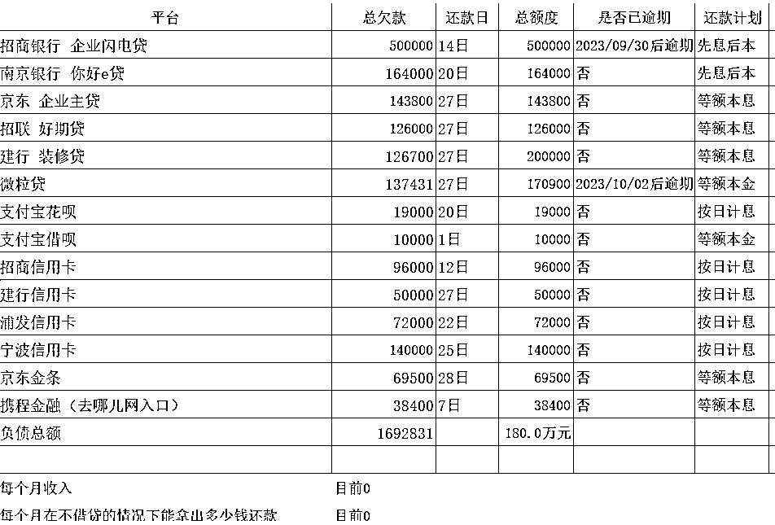
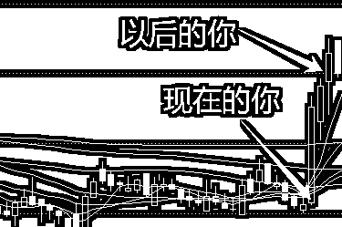

来源：https://gm0p4fv1ug.feishu.cn/docx/UcTcdmrslo4K4Qx72Dbch7YbnLY
做债务优化以来接触了很多负债客户，有一半的客户是创业负债的。有的人是因为疫情三年亏损，有的人是因为一些个人原因亏损。在这里我想跟大家聊聊创业负债我的一些想法和建议。
因为口罩的原因，国人的负债率在过去的几年有所增加，但其实相对于其他发达国家来说还是比较低的。但对于创业者来说，负债率可能会更高一些，因为大家通常需要借贷来启动和运营我们的业务。
我们创业负债率的高低取决于创业者的资金需求、借贷条件和还款能力等因素。对于我们的负债情况，可以从两个角度来看待。
首先，负债本身并不是一件坏事，适度的负债可以盘活现金流，为我们的事业发展提供资金支持，同时可以带来一定的压力，助力我们梦想的实现和发展。然而，过度负债可能会导致财务风险和压力，就需要谨慎对待了。目前的情况下，如果没有特别大的成功概率的话，负债创业大家还是需要谨慎的。因为我遇到太多创业负债的客户，这也是为什么会写这个帖子的原因。
其次，我们应该关注负债的用途和回报。如果负债是用于投资和创造价值为目的，比如购买资产或创办企业，那么它可能是有意义的。但如果负债是用于消费和满足短期欲望，而没有带来长期回报，那么就需要审慎考虑了。
总的来说，负债率的高低需要根据个人的情况和风险承受能力来评估。创业者在借贷时应该谨慎考虑借款金额、利率和还款能力等因素，以确保负债能够为业务发展带来正面影响。同时，个人和家庭也应该保持理性消费和储蓄的习惯，以确保财务稳定和未来发展的可持续性。
负债率的高低对我们来说特别需要关注，特别是在商业和个人财务管理中。
首先，我们需要明确一点，负债并不一定是坏事。在商业运营中，借债可以帮助企业扩大规模、投资新项目、提高生产力。但是，负债也需要谨慎管理，避免债务超过收入增长速度。
一个人或企业的财务健康，取决于债务和收入的平衡。如果债务增长速度超过收入增长速度，就会面临风险。当债务超过收入时，可能会出现无法偿还债务的情况，甚至导致资产被迫出售或信用受损。
因此，我们需要密切关注债务和收入的增长速度。确保债务的增长速度不超过收入的增长速度，这样才能保持财务的稳健。
当你感觉你的收入已经无法偿还债务的情况，你就要当心了。甚至是你的收入无法覆盖当月利息的情况，更要慎重，这个时候如果未来收入做不到持续增加，是非常危险的。

像这个老板就是本来自己的征信很好，然后不管是信用卡还是贷款批的都非常高，但这也是导致他在欠债路上越走越远的最大原因。目前在我的建议下他已经及时止损了。不然现在他在没收入的情况下会越陷越深。
另外，还需要注意收入的增长速度与生产率的关系。如果收入的增长速度超过生产率的提高，可能会导致竞争力的下降。生产率的提高意味着更高的效率和更好的竞争力，但如果收入增长速度过快，可能会导致成本上升、利润下降，最终影响企业的竞争力。
因此，在管理负债和收入时，需要找到一个平衡点。确保债务的增长速度不超过收入的增长速度，同时也要注意收入的增长速度与生产率的关系，避免失去竞争力。
接下来，你可以考虑以下几个方面来应对困境：1. 重新评估你的商业模式和经营策略：审视你的创业项目，找出问题所在，并思考如何进行调整和改进。有时候，可能需要重新定位你的产品或服务，找到更适合市场需求的方向。
2. 寻求外部支持和合作：与投资者、合作伙伴或其他相关行业的人建立联系，寻求可能的合作机会或融资渠道。他们可能能够提供资金、资源或经验，帮助你渡过难关。
3. 优化运营成本和管理效率：仔细审查你的运营成本，找出可以降低的部分，并寻找更有效率的管理方式。这可能包括减少不必要的开支、优化供应链、提高员工效率等。
4. 增加销售和市场推广力度：加大对产品或服务的宣传和推广力度，提高市场知名度和销售额。可以考虑采取各种营销手段，如线上线下广告、促销活动、社交媒体营销等。
5. 持续学习和提升自身能力：不断学习和提升自己的专业知识和技能，以应对不断变化的市场环境。同时，也要保持积极的心态和坚定的决心，相信自己能够克服困难，取得成功。
创业负债是一个挑战，但也是一个机会。通过审视和调整自己的创业项目，寻求外部支持，优化运营和市场推广，以及持续学习和提升自身能力，你有机会重新站起来，实现创业梦想。
首先，我理解大家的担忧和困境。面对负债，确实需要做出一些调整来应对生活和工作的挑战。以下是果果的一些建议：
1. 紧缩开支：审查你的日常开支，找出可以削减的部分。优先保证必需品的支出，如食物、住房和基本生活费用。尽量避免不必要的消费，节约每一笔开支。
2. 制定预算：制定一个详细的预算计划，包括收入和支出的明细。确保你的支出不超过收入，并合理分配资金用于不同的开支，如债务还款、生活费用和紧急备用金。
3. 寻找额外收入来源：考虑寻找额外的收入来源，如兼职工作、副业或出租出售闲置资产。这样可以增加你的收入，缓解负债压力。
4. 债务管理：与债权人沟通，尽量协商延期还款、降低利率或制定分期付款计划。同时，制定一个还款计划，按时还清债务，避免逾期和滞纳费用的产生。
5. 寻求支持和建议：与专业人士如财务规划师或债务咨询师咨询，寻求他们的建议和帮助。他们可以帮助你制定更有效的财务计划和债务管理策略。
最重要的是保持积极的心态，相信自己能够克服困难。负债是一种挑战，但也是一个机会，通过合理的规划和努力，你可以逐渐摆脱困境，重建财务稳定。如果可能最好跟家人坦诚你的债务情况。
我遇到很多债务人，当选择方案的时候，通常不会选择那个最优解，而是选择不被家人知晓自己的负债情况。可是呢纸是包不住火的，早点坦诚，家人有能力的为你出一份力，没有能力的，最起码在催收上门的时候，不至于太过于恐慌。
创业负债后，公司关闭，现在我们面临两个选择：找工作或再次创业。
这个问题没有一个标准答案，因为每个人的情况和偏好都不同。果果建议可以从以下几个方面考虑，以帮助你做出决策：
1. 资金和风险承受能力：评估你目前的财务状况和能够承受的风险。如果你的负债较大，可能需要先找工作来稳定经济状况，还清债务，再考虑再次创业。如果你有足够的资金和风险承受能力，可以考虑再次创业。
2. 兴趣和激情：考虑你对创业的兴趣和激情。如果你对创业有强烈的热情，并且相信自己有能力成功，那么再次创业可能是一个好的选择。但如果你对创业感到疲惫或不确定，那么找工作可能更适合你。
3. 技能和经验：评估你的技能和经验是否适合再次创业。如果你有相关的技能和经验，并且相信自己可以在新的创业项目中发挥作用，那么再次创业可能是一个好的选择。但如果你觉得自己缺乏必要的技能和经验，找工作可能更有利于你的个人发展。
最重要的是，你要认真思考并权衡自己的情况和目标，做出最适合自己的决策。无论你选择找工作还是再次创业，都要保持积极的心态和努力奋斗的精神，相信自己能够走出困境，迎接新的机遇。
1. 面对现实，接受并处理负债：首先，我们需要正视自己的负债情况，不要逃避或否认。列一下负债清单，制定还款计划，并确保自己有能力能够按时还款。同时，可以优化现有资产，以筹集资金用于还债。
2. 寻求专业帮助：建议大家寻求专业的负债咨询师的帮助，以了解法律和财务方面的权益和责任。他们可以提供专业的指导和建议，帮助客户制定更合理省钱的还款计划，并协助客户与债权人进行谈判。
3. 增加收入和削减开支：积极寻找增加收入的机会，例如寻找兼职工作、创业或提升自身技能。同时，削减不必要的开支，优化生活方式，以节省资金用于还债。
4. 建立紧急储备金：建立紧急储备金，以应对突发事件和意外开支。这样可以避免再次陷入债务困境。
5. 培养理财意识和良好的财务习惯：学习如何正确的管理财务，包括制定预算、合理规划支出、避免过度借贷等。这样可以避免再次陷入债务困境。
6.给家人和自己买保险，避免因为健康的问题，让债务情况雪上加霜，在经济条件不好的情况，可以买百万医疗等便宜而且关键时候用的上的保险。有条件的时候再补充其他保险。
负债并不可怕，可怕的是我们因为负债一蹶不振，破罐子破摔。每个人的人生都有高潮和低谷。如果现在你正在低谷的时候，那么只要你努力，未来哪天都会比今天好。

祝大家天天赚钱，日日攒钱，生财有术！！
如果大家想了解更详细的负债情况可以看我上篇帖子《负债方面我能为圈友提供什么价值》https://wx.zsxq.com/mweb/views/topicdetail/topicdetail.html?topic_id=588152111251544